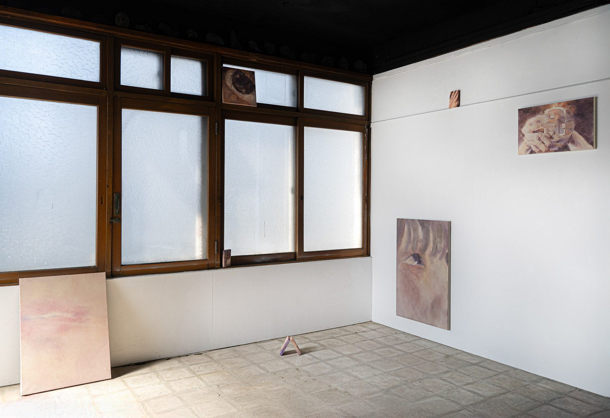
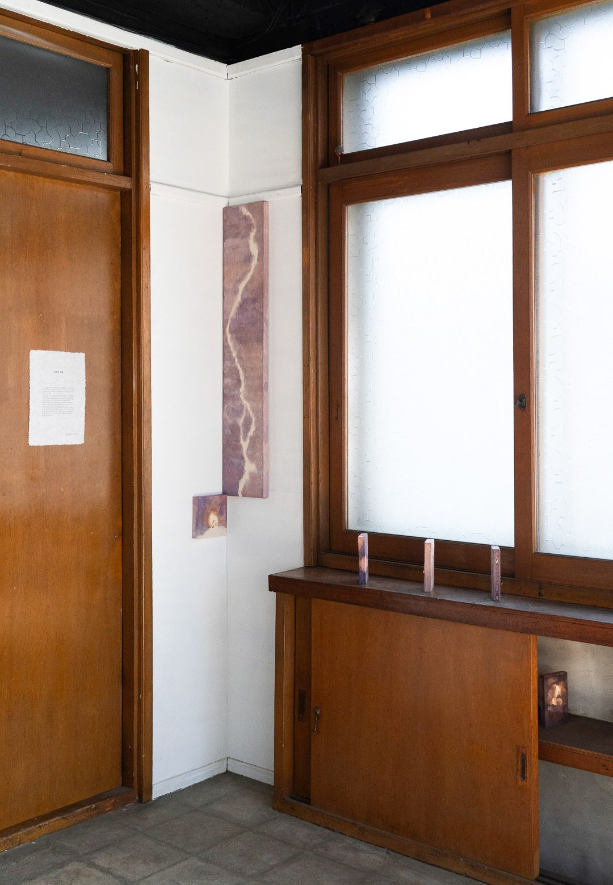
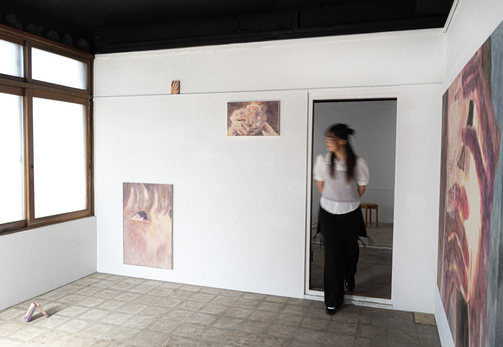
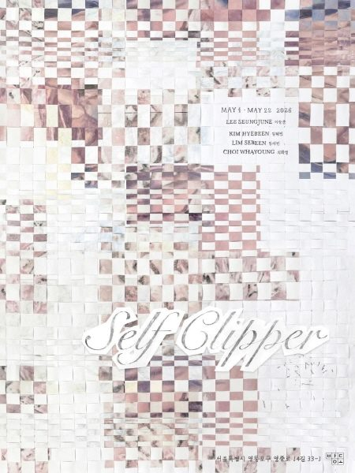
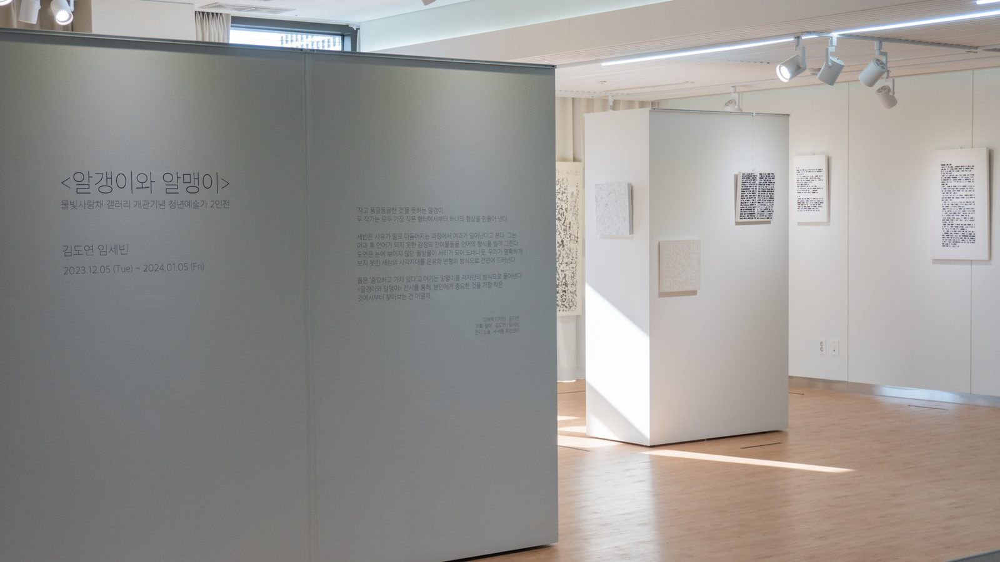
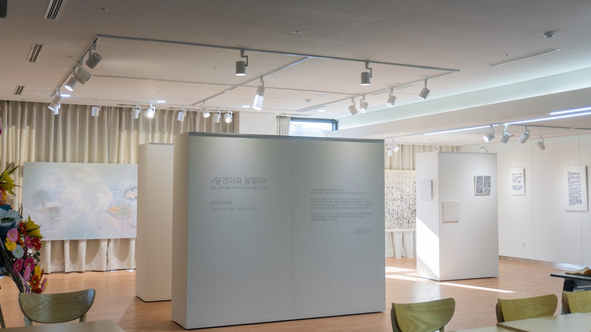
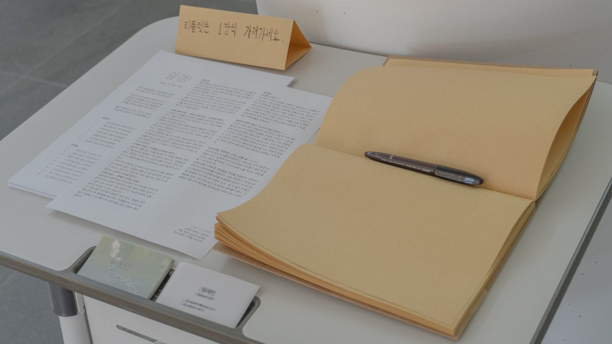
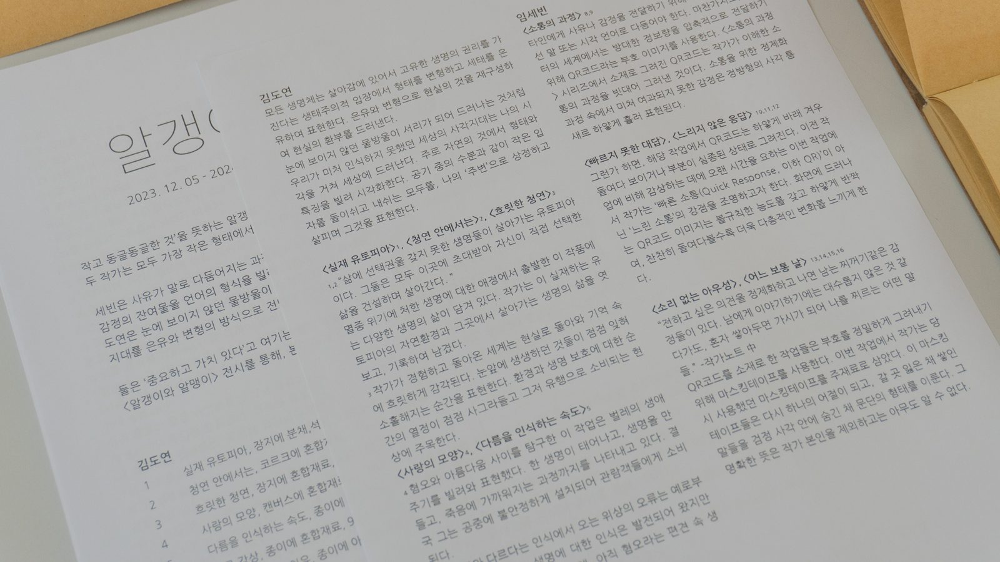
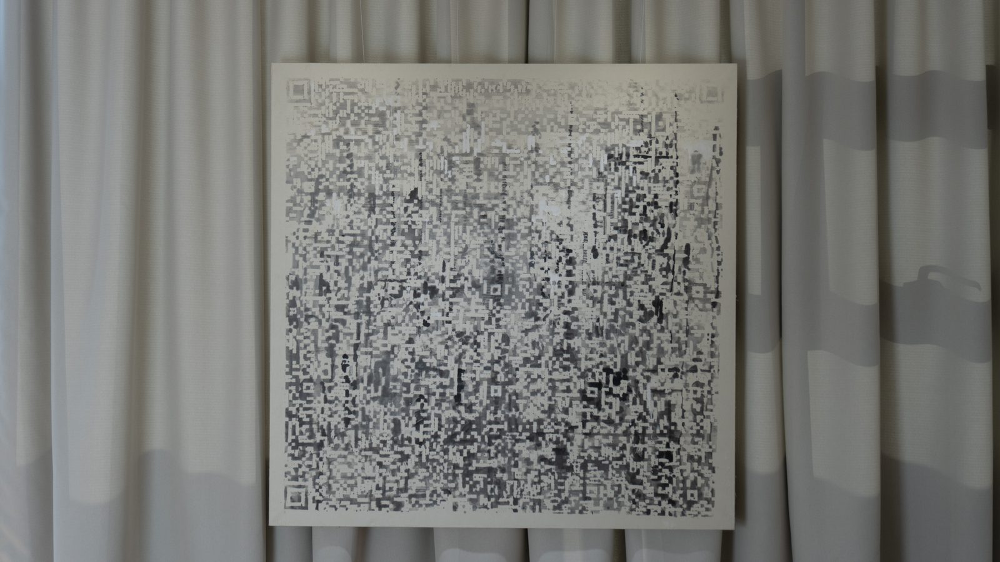
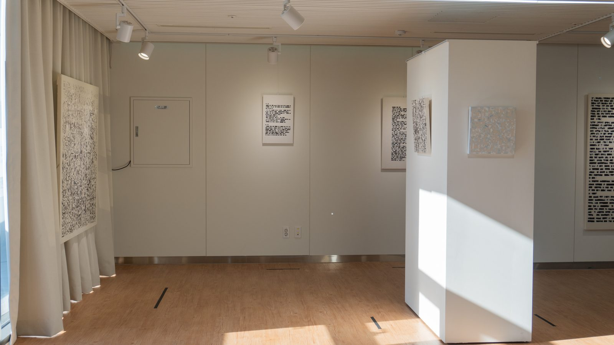

EXHIBITION
전시
- 참여 작가
- 김혜빈, 임세빈, 최화영
- 기획 및 주관
- 이승준
- 주최
- 방도
- 포스터 디자인
- 양은주
- 전경 사진
- 박세연
〈미약한 지탱〉 연작을 3층 전시실에 선보였습니다. 기획자 이승준의 서문은
TEXT 페이지에서,
전시 정보는 방도 홈페이지에서 볼 수 있습니다.




출품작 Room 3
-
각자의 온도
2024 · 장지에 투명먹, 수묵담채 · 145×194cm
-
eyes on you
2025 · 장지에 채색 · 90.9×60.6cm
-
breathe
2025 · 장지에 투명먹, 채색 · 72.6×53cm
-
light
2025 · 장지에 채색 · 34×53cm
-
그 너머에
2025 · 장지에 투명먹, 채색 · 25×25cm
-
untitled
2025 · 장지에 투명먹, 채색 · 102×20cm
-
candle
2025 · 장지에 채색 · 19×19cm
-
미약한 지탱
2025–26 · 장지에 투명먹, 채색 · 15×9cm × 14점
〈미약한 지탱〉 연작을 중심으로 구성한 석사청구전입니다. 출품작은
WORK 페이지에서 볼 수 있습니다.





